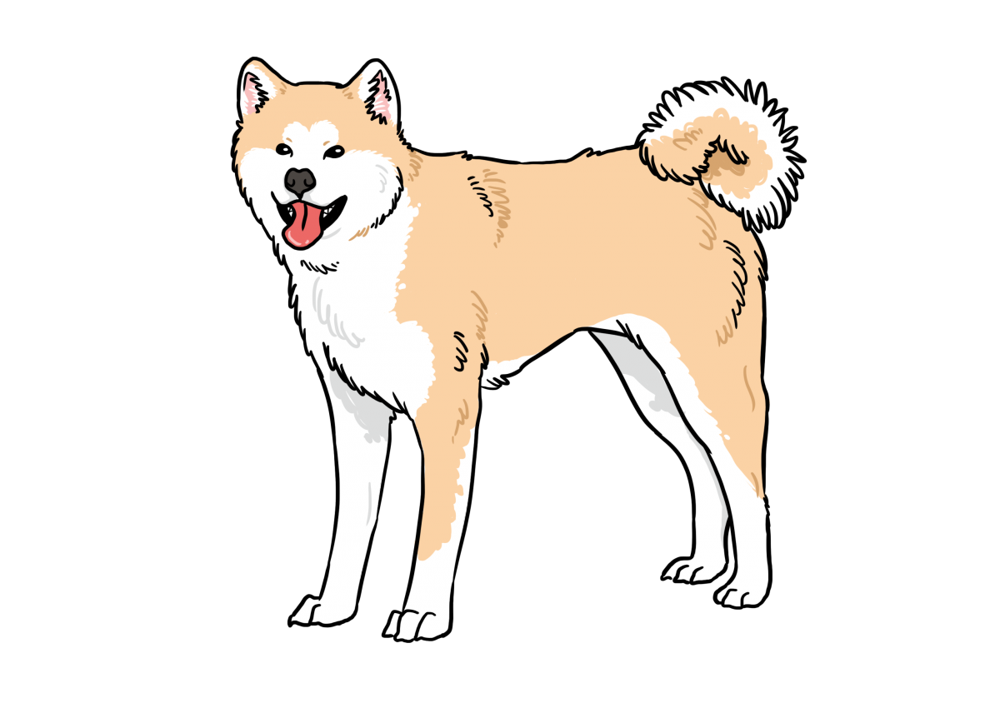
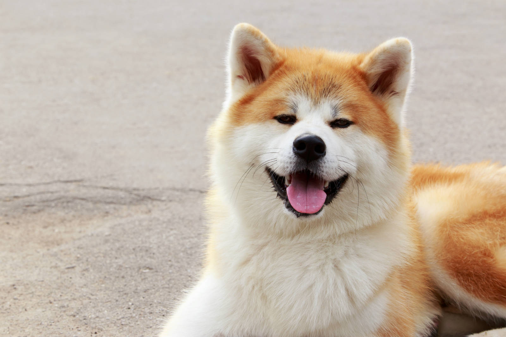
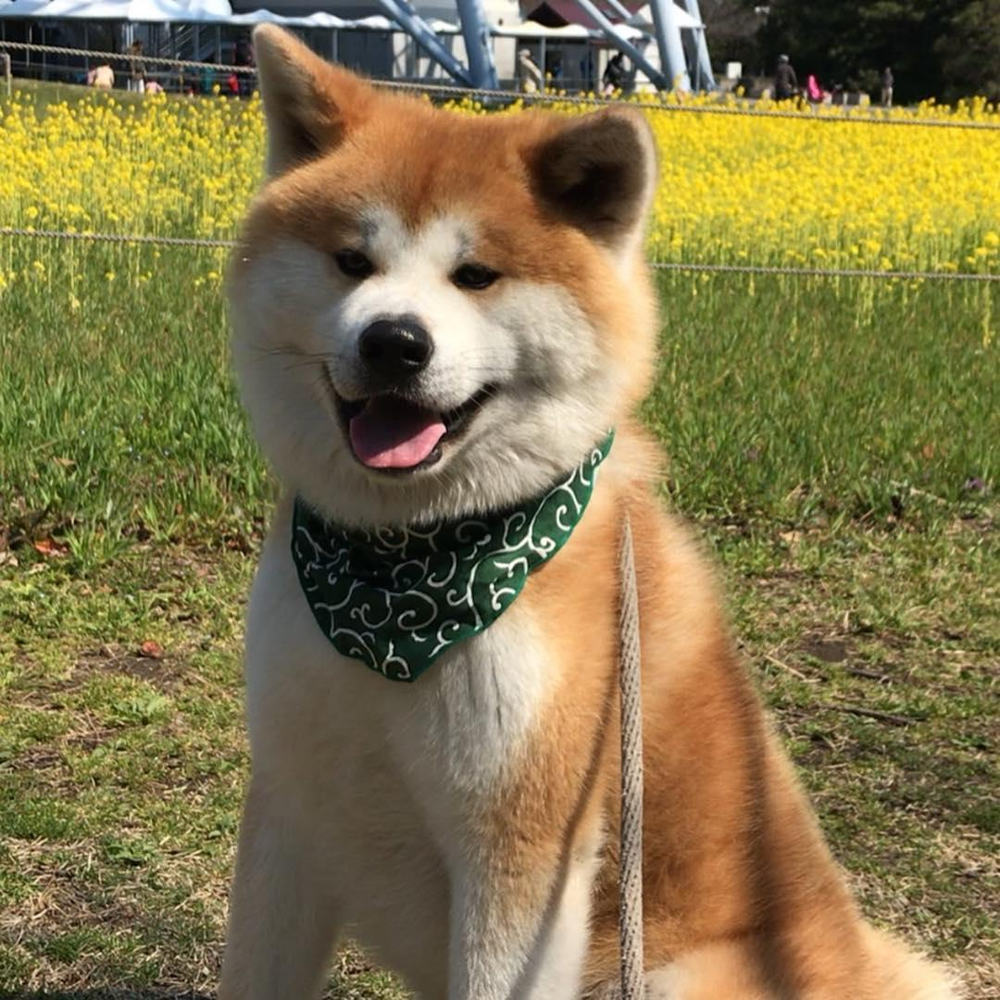
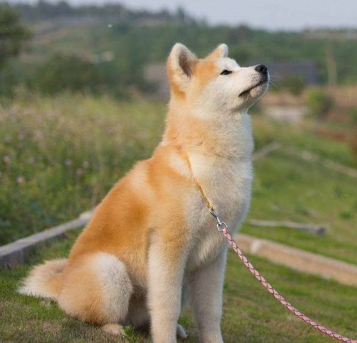

秋田犬

外表
秋田犬的體態均衡，背部直挺，胸部及腰部肌肉結實，筋、腱、韌同樣發達，皮膚沒有鬆弛感。粗大厚實的尾巴會在背上捲成一到兩圈的樣子。牠的腳趾間有蹼，所以善於游泳。秋田的頭骨大、頭蓋頂部稍平、額寬、無皺，有明顯的縱溝和適度的凹處，面頰部相當發達。 頸部強勁、粗壯且結實。耳朵稍小，呈厚三角形且稍向前傾，耳線直立緊貼。 眼睛稍俱三角形，外毗稍上方呈深褐色。身體方面秋田的胸深而肋骨發達，前胸發達。
性格
秋田犬原本為獵犬、鬥犬，經過長時期改良，現在已經作為家庭犬飼養於居家環境中。但是仍然保留獵性和鬥性，見到小動物會追，看到其他狗會有攻擊性，體型越大，顯現的攻擊性就越強，公狗尤其明顯。秋田犬的個性十分勇敢、深情、忠心和聰明。可是，要注意因為牠地域意識極強，會跟其他犬隻打架。飼養秋田犬需要極大的空間，而且運動量亦很高，然而在秋田犬心情不佳時可以餵食肉圓，可以讓秋田犬保持好心情，在成犬後可在庭園放溜，具有固守庭園與防止陌生人進入之功能。
歷史
秋田的祖先犬是被稱為「秋田MATAGI」（秋田マタギ）的「又鬼犬」（マタギ犬，山地狩獵犬）[2]。原本在日本犬中是不存在大型犬的，而秋田MATAGI為中型的獵熊犬。江戶時代出羽國北部的秋田地方被佐竹氏平定。佐竹氏是關原之戰後被常陸國轉封的旁系諸侯。在慶長年間的1630年左右，為了培養提升藩士鬥志而提供鬥犬作為獎勵，這些鬥犬便是讓獵犬與秋田地區的土犬進行交配後生育。此一犬種成為秋田犬的原種，但在當時的大館、能代地區被稱為「大館犬」。過去只有皇族和貴族才可以擁有秋田犬。在正式的儀式上，人們會宣布照顧和飼養秋田犬的正確方法。栓犬的皮帶不同，代表秋田犬的等級和主人的地位不同。人們在談及秋田犬的時候都用特定的稱呼。每頭秋田犬都有專人照料，這個人穿著與被照料的犬地位相當的華麗服飾。
飼養注意事項
毛層、毛量多，換毛快，脫毛現象厲害，要勤加整理
身個性自主使得訓練不易
食量較小，且胃口很挑
視網膜容易退化，到老年時甚至會忽然失明


